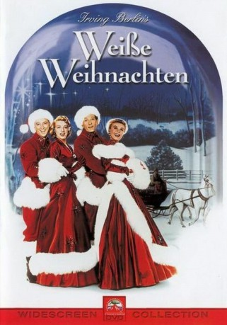
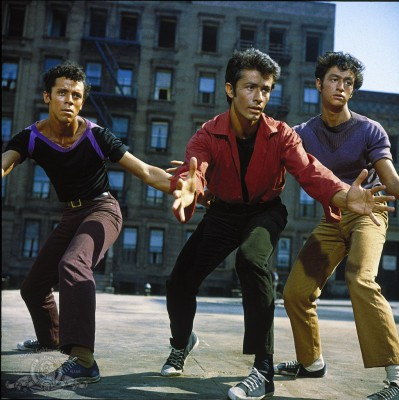

#12027 Weiße Weihnachten
Alternativ: White Christmas (Englischer Titel)
Auszeichnungen: für 1 Oscars nominiert
 
 IMDB-Wertung: 7.6 / 10
IMDB-Wertung: 7.6 / 10  Tomatometer: 77
Tomatometer: 77  Metascore: 0
Metascore: 0 
Die zwei Freunde Bob Wallace und Phil Davis sind 1944 während des Zweiten Weltkrieges in Europa stationiert. Während einer Weihnachtsfeier für die Soldaten singt Bob das Lied White Christmas. Kurz nach der Feier wird das Lager angegriffen; Phil zieht Bob von einer umstürzenden Mauer weg und rettet ihm so das Leben.
Jahr: 1954
Dauer: 120 Minuten
FSK: 12
Land: USA Studio: Paramount PicturesTonspuren: DD2.0 - ,
Untertitel: Deutsch,
Auflösung: 1080p (1920x1080) Größe: 10055 MB
Genre: Komödie, Liebe, Musical, Weihnachten
Regisseur: Michael Curtiz
Drehbuch: Norman Krasna, Norman Panama, Melvin Frank
Soundtrack: Gus Levene, Joseph J. Lilley, Van Cleave
Darsteller:
 Bing Crosby als Bob Wallace
Bing Crosby als Bob Wallace- Danny Kaye als Phil Davis
- Rosemary Clooney als Betty Haynes
- Vera-Ellen als Judy Haynes
 Dean Jagger als Major General Thomas F. Waverly
Dean Jagger als Major General Thomas F. Waverly Mary Wickes als Emma Allen
Mary Wickes als Emma Allen Leon Alton als Anniversary Party Guest (uncredited)
Leon Alton als Anniversary Party Guest (uncredited) Al Bain als Anniversary Party Guest (uncredited)
Al Bain als Anniversary Party Guest (uncredited) Frank Baker als Anniversary Party Guest (uncredited)
Frank Baker als Anniversary Party Guest (uncredited)-  George Chakiris als Dancer (uncredited)
- Barrie Chase als Doris Lenz (uncredited)
- Robert Crosson als Albert (uncredited)
 Sayre Dearing als Ex-Staff Officer (uncredited)
Sayre Dearing als Ex-Staff Officer (uncredited) Franklyn Farnum als Club Patron (uncredited)
Franklyn Farnum als Club Patron (uncredited) Bess Flowers als Club Patron (uncredited)
Bess Flowers als Club Patron (uncredited) James Gonzalez als Anniversary Party Guest (uncredited)
James Gonzalez als Anniversary Party Guest (uncredited) Gavin Gordon als General Harold G. Carlton (uncredited)
Gavin Gordon als General Harold G. Carlton (uncredited)- Johnny Grant als Ed Harrison (uncredited)
 Percy Helton als Train Conductor (uncredited)
Percy Helton als Train Conductor (uncredited) Chuck Hicks als Anniversary Party Guest (uncredited)
Chuck Hicks als Anniversary Party Guest (uncredited) Michael Jeffers als Stagehand (uncredited)
Michael Jeffers als Stagehand (uncredited) I. Stanford Jolley als Station Master (uncredited)
I. Stanford Jolley als Station Master (uncredited)- Richard Keene als Carousel Club's Stage Manager (uncredited)
 Kenner G. Kemp als Ex-Soldier (uncredited)
Kenner G. Kemp als Ex-Soldier (uncredited)- Leota Lorraine als Anniversary Party Guest (uncredited)
- Leighton Noble als Bandleader (uncredited)
 Barry Norton als Carousel Club Diner (uncredited)
Barry Norton als Carousel Club Diner (uncredited) Joe Ploski als Ex-Soldier (uncredited)
Joe Ploski als Ex-Soldier (uncredited) Sig Ruman als Landlord (uncredited)
Sig Ruman als Landlord (uncredited) Cosmo Sardo als Waiter (uncredited)
Cosmo Sardo als Waiter (uncredited)- Dick Stabile als Band Leader at the Carousel Club (uncredited)
- Grady Sutton als Mr. Herring (uncredited)
 Herb Vigran als Novello, Nightclub Manager (uncredited)
Herb Vigran als Novello, Nightclub Manager (uncredited)- John Brascia als John
- Anne Whitfield als Susan Waverly
- Bea Allen als Dancer (uncredited)
- Benjie Bancroft als Anniversary Party Guest (uncredited)
- Joan Bayley als Dancer (uncredited)
- Brandon Beach als Anniversary Party Guest (uncredited)
- Mae Bruce als Lady in Depot (uncredited)
- Tony Butala als Child Dancer (uncredited)
- Boyd Cabeen als Soldier (uncredited)
- Glen Cargyle als Jeep Driver (uncredited)
- Albert Cavens als Soldier (uncredited)
- Evelyn Ceder als Anniversary Party Guest (uncredited)
- Les Clark als Dancer (uncredited)
- Bud Cokes als Anniversary Party Guest (uncredited)
- Lorinne Crawford als Rita (uncredited)
- Paul Cristo als Anniversary Party Guest (uncredited)
- Marcel De la Brosse als Carousel Club's Maitre d' (uncredited)
Datei: X:\1950-1959\Weiße Weihnachten (1954, FSK12, 1920x1080).mkv seit 11.11.2019
Festplatte: Gemischt-01+Anime
 Es gibt insgesamt 141 Filme in der Gruppe '1950-1959'
Es gibt insgesamt 141 Filme in der Gruppe '1950-1959'